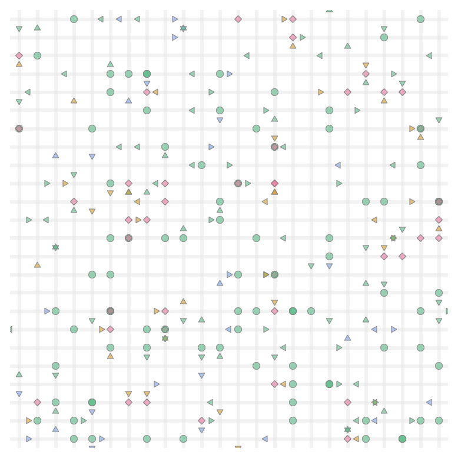
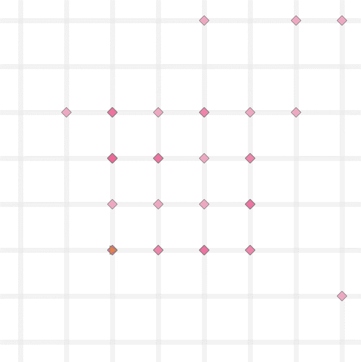
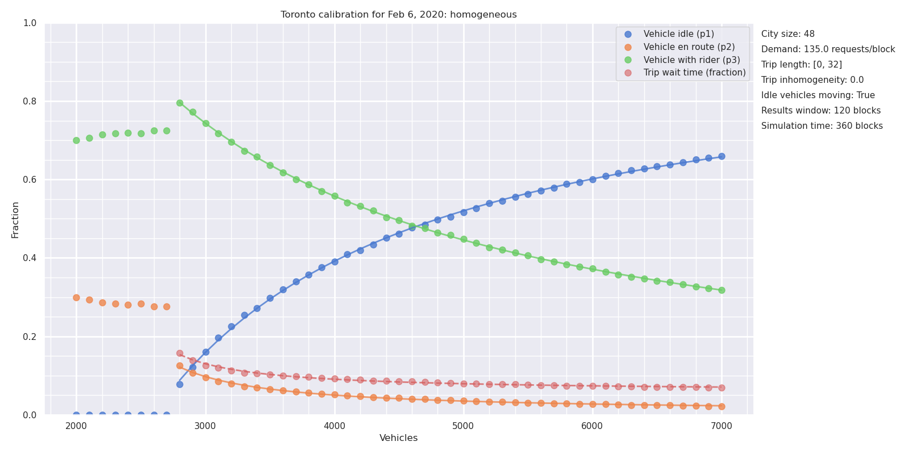
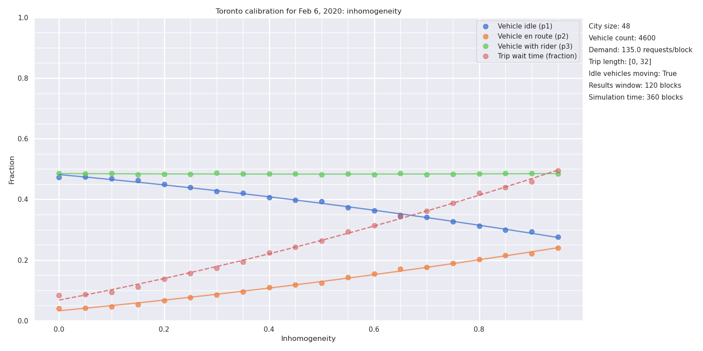
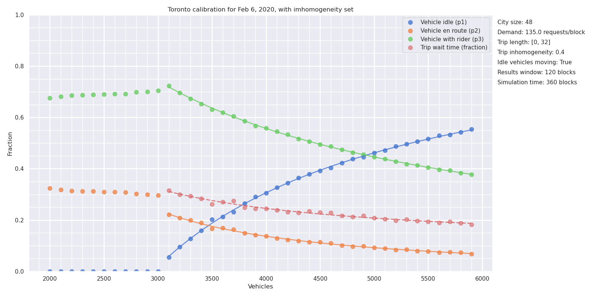
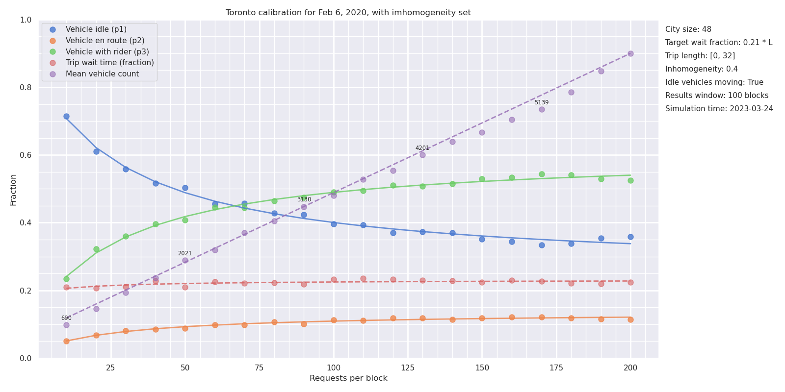

1 Introduction
Discussion about how Uber and other Platform Transit Companies (PTCs) should fit into the city transit landscape is vigorous but often hampered by lack of reliable data.
Some individual researchers have been granted privileged access to company data, have been commissioned to carry out research, or have been compensated for their work. Research carried out under these conditions is not replicable and is fraught with conflicts of interest.
Some cities have negotiated or required access to ridehail data from PTCs, but that data is not always accessible to the broader public. In those few cases where cities do make data public, most prominently Chicago (City of Chicago 2022) and New York City (New York City Open Data 2022), key elements are missing, such as the time that drivers spend on the platform but without a trip.
This paper attempts to compensate for the lack of reliable data. It presents a set of simple computer simulations of ridehail traffic and trips in a city, which can be calibrated against broad aggregate data that is more widely available than detailed statistics. The models simulate a number ridehail vehicles driving around a city, being assigned trip requests, picking up passengers and dropping them off at their destinations. They are intended to be as simple as possible while still capturing the essential characteristics of a ridehail system.
The simplest simulation is defined solely by the size of the city, the average trip duration, the number of vehicles (supply), and the rate of trip requests (demand). The results enable the relationships among these parameters, as well as wait times and vehicle utilization rates, to be explored. Extensions account for uneven trip distributions, and equilibration of supply under price changes.
The simulation approach has several goals:
To check intuition-based claims. Some policy discussions have led to talk at cross purposes with different unstated assumptions underlying rival claims, such as the relationship between the number of idle drivers and wait times or the effect of price changes on driver incomes. Both of these are discussed below.
To ask “what if?” questions that may provide insights into the trade-offs faced by platform companies, municipal governments, drivers and passengers. Toronto is used as a laboratory for these questions.
To enable comparison of the ridehail experience among cities, which is easier with a simple model independent of specific geography and road layout.
2 Methods
The ridehail simulations have three components, each of which is described below:
A geographical area. This is called a City, as most discussions about ridehail systems have focused on cities as the unit of comparison, but it need not be an actual “city”.
Vehicles. These drive around the city, respond to trip requests, and carry passengers from the trip origin to the trip destination.
Trips. These start as trip requests, and have an origin and destination within the city.
2.1 Cities
A city is a square grid of identical streets, creating uniformly-sized “blocks”.
The square is, “wrapped”, so that a vehicle going off the top of the city appears at the bottom, and a vehicle going off the right of the city appears on the left (topologically, it is a torus). This is not as unrealistic as it may first appear: in the real world, drivers are not bound by city boundaries: some trips begin inside the city and finish outside, while others start outside and terminate inside the boundaries. The “wrapped” layout can be thought of as an area with a constant population of vehicles, sustained through a flux of vehicles leaving and entering through the edges of the area under consideration.
In this simplest model of a city, all locations are identical.
The unit of travel is a single block. A block may be thought of as a distance, a time, or a combination of the two. It is often taken as a minute of travel time, but this is not a requirement.
2.2 Vehicles
Vehicles all drive at the same constant speed, and each vehicle is always in one of three “phases”, which are commonly used in discussions of ridehail systems.
In phase \(P1\), the driver is logged into a ridehail app, their vehicle is available for the platform to assigned it to trips, but they do not have an assigned trip. In this phase the vehicle drives randomly around the city. Vehicles in P1 are also sometimes called “idle” or “available” for trip requests.
In phase \(P2\), the platform has assigned a vehicle to a trip, the vehicle has accepted the assignment, and it drives towards the trip origin by the shortest route to pick up the passenger. This route may involve going “off the edge” of the city and appearing at the opposite side. P2 is sometimes called en route to picking up the passenger.
In phase \(P3\), a vehicle has picked up one or more passengers and is driving by the shortest route to the destination.
Once a trip is complete, the vehicle returns to \(P1\), waiting for the next trip request.
These phases are related to other terms common in the industry. The combination of \(P1\) and \(P2\) phases, when a driver has no passenger in the car, is sometimes referred to as deadheading time. The combination of \(P2\) and \(P3\) phases, when a driver is assigned to a trip (and is either en route or with a passenger), is sometimes called engaged time. Evaluated across the whole driver population, the proportion of time drivers spend in \(P3\) is also called the utilization rate for the system. In this article, the proportion of time drivers spend in \(P1\) is called the excess supply of the system.
2.3 Trips
Each trip has an origin and a destination. In the simplest simulation, each is chosen randomly from intersections in the city, except that the two locations cannot be the same.
From the passenger’s point of view, trip time is in one of two phases: waiting or traveling. For randomly-selected trip origins and destinations, the average trip length \(L\) in a city with \(C\) blocks along each side is \(C/2\).
The simulations focus entirely on “UberX-like” systems in which each vehicle takes only one trip at a time. The trip may represent one passenger or a group of passengers, but does not include “shared trips” with multiple stops, such as the Uber Pool service (now “UberX Share”) where passengers request trips separately but share a vehicle for some portion of the trip. Ridehail operators have repeatedly tried to introduce such systems but, even before Covid, they made up a small portion of the total trips, and even when a passenger requested an “Uber Pool” trip they often ended up not sharing the vehicle (Policy & Innovation Transportation Services 2019).
The “wait time” used here (\(W\)) is the time between placing a trip request and setting off to the destination. This measure is different to that commonly used by Uber. With wait time defined as it is here, all the time of a trip (from request to arrival at the destination) is assigned to either waiting or travelling. For Uber, the wait time is the time elapsed until the driver appears at the location, but that leaves an unassigned “grey zone” period between driver arrival and the start of the trip, which may include time for the passenger to come out onto the street, time to find the vehicle (or for the driver to pick out the passenger), to possibly put luggage in the trunk, and to get in the vehicle. Uber currently (April 30, 2023) does not allow drivers to cancel a trip until they have waited 5 minutes,(Uber, Inc. 2023) so this “grey zone” can be a substantial portion of the total trip time. Unless otherwise stated, “wait time” refers to the model-based time, not the Uber-reported time.
2.4 Simulations
Each simulation is a sequence of moves. In each move, vehicles travel one block, from one intersection to the next. A typical move involves the following events:
Any new trip requests are generated.
Available vehicles are assigned to trips. The trip is assigned to the nearest available vehicle in \(P1\), and if there are multiple vehicles at the same distance from the trip origin, one is selected at random. Vehicles always accept trip assignments.
Vehicles move from one intersection to the next. Each vehicle chooses a direction and moving a block to the next intersection. For vehicles in \(P1\), the direction is random; for vehicles in \(P2\) and \(P3\), the direction is towards the trip origin or destination, as applicable.
Any trip that reaches its destination terminates.

Figure 2 illustrates a simulation in progress. At the end of each move, the simulation records and optionally plots the state of each vehicle and statistics about the overall system (fraction of vehicles in each phase, for example).
This framework is sufficient to simulate a city with a fixed supply of vehicles, and fixed demand (rate of requests). For some of the results below, this is all that is needed. For some other topics, the simulation has to be extended.
2.5 Identities
With the trip and vehicle phases defined as they are here, there are two identities that are always obeyed by simulations that establish a steady state.
The first identity says that the time that vehicles spend with passengers on board is the same as the time that passengers spend riding in vehicles
\[ N \times P3 = D \times L \tag{1}\]
where:
\(N\) is the number of vehicles, which represents the supply of vehicles
\(P3\) is the fraction of time vehicles have passengers
\(D\) is the rate of trip requests, which represents the demand for trips
\(L\) is the average trip duration.
A second identity says that, again as long as the system is in a steady state, the time vehicles spend en route to trip origins is the same as the time passengers spend waiting to be picked up.
\[ N \times P2 = D \times W \tag{2}\]
where:
\(P2\) is the fraction of time vehicles spend en route to picking up passengers
\(W\) is the average wait time.
2.6 Regions
The spirit of the simulations is to be as simple as possible, so that they can be calibrated using the very limited high-level public data available and so that they can be used comparatively. However, two extensions are necessary for some applications.
Many cities have a central “downtown” zone where the demand for ridehail traffic is high, surrounded by suburban areas where demand is lower. For example, 60% of trips in Metro Toronto originate within “Old Toronto” and East York, even though these two make up less than 20% of the total Metro area. This inhomogeneity is built into the model as two zones. A central zone has sides \(C/2\) (so, one quarter of the city’s area) and has a higher rate of trip requests than the surrounding area, as shown in Figure 3 below. The trip destinations remain randomly distributed around the whole city. With an inhomogeneity of zero, the central zone is the same as the rest, with an inhomogeneity of one all trip requests take place in the central zone. In this way, and in the spirit of keeping the model as simple and parsimonious as possible, a single inhomogeneity parameter between zero and one captures the two zones.

The second extension, discussed in the section on Engaged Time standards below, is to allow vehicles to enter and leave the system in response to price and demand.
The use of random locations for trip destinations implies an average trip length of \(C/2\) (regardless of inhomogeneity). To model an area where the average trip length may differ from this, a maximum trip length can be set, with trips distributed randomly over intersections within that distance.
2.7 Implementations
The simulation is implemented in the Python programming language, and the code is available on GitHub at https://github.com/tomslee/ridehail. It can be run as a desktop application from a command line (tested on Windows and on Linux) and a subset can be explored more interactively online at https://tomslee.github.io/ridehail/lab/.
Simulations using the desktop application are controlled by a configuration file, which at its simplest specifies the size of the city (number of blocks on each side), the base demand rate (number of trip requests each move), and the number of vehicles. Currently there are almost 50 configuration parameters governing (beyond the basic simulation), logging, animation, sequence, equilibration, shocks and more.
A subset of the simulations is also available on the web at https://tomslee.github.io/ridehail/lab/ , where the configuration is set in the browser. The simulations run in the browser (not at a server), using the Pyodide python distribution (The Pyodide development team 2022), using the same underlying code as the desktop but with different configuration and animation options. The web site is currently a playground or laboratory, which allows experimentation but does not provide a way to save results. All results in this paper are taken from desktop simulations.
2.8 Justifications
The simulations are obviously dramatic simplifications of reality. There is no treatment of cancelled trips, no distinctions among drivers, no consideration of information asymmetries and special driver incentives, or of many other factors that go to make up the complex world of ridehailing. The distribution of trip durations is roughly normal, which is different from the actual distribution. Most simulations are run with no account taken for different driver speed when idle compared to when engaged on a trip.
In some ways this oversimplification is a strength: there is so little public data available regarding the specifics of ridehail markets that any more complex model would be overfitted. Many published reports and papers have relied either on access to Uber’s data or on driver surveys to collect data. The former has obvious conflict of interest problems and the latter is always going to be partial. The challenge, in fact, is to find enough reliable data to calibrate even this simplified model against reality.
A second benefit is that by having a small number of parameters we can address some of the questions asked in public and policy circles, which relate to overall gross features of the system. How does wait time depend on demand? What are the likely consequences of a price increase? More generally, how to the basic variables of the system affect each other. Finally, a simple model should allow comparison among cities, based on their values of the basic parameters.
3 Ridehail in Toronto
The ridehail market in Metropolitan Toronto was chosen as a test arena. The city has released important data in a 2019 study by the City of Toronto (Policy & Innovation Transportation Services 2019) and an update in 2021 (Policy & Innovation Transportation Services 2021), here called Toronto 2019 and Toronto 2021, which provide a valuable set of high-level data that can help validate the simulation approach.
Metro Toronto has a population of 3 million people. It consists of the City of Toronto and surrounding urban areas (Scarborough, Etobicoke, York, East York, and North York and is intermediate in size between the old City of Toronto and the Greater Toronto Area (population 6 million). Metro Toronto (henceforth just “Toronto”) has an area of 630 square kilometres. For the purposes of these simulations, Metro Toronto is considered as a square, with sides of 25 km and hence an area of 625 km^2.
3.1 Reference values
In Toronto 2021, the authors chose Thursday Feb 6, 2020 as a representative day to assess the overall state of ridehail in Toronto, pre-pandemic (p25). The first question we ask is: can the model reproduce important aspects of this day?
Although the date is now three years in the past, any reference to “Toronto” here implies “Toronto on February 6, 2020”. Relevant statistics from this study are shown in Table 1.
| Quantity | Value |
|---|---|
| Trips completed (D) | 193,902 (135/min) |
| Average trip length (L) | 8.13km |
| Average vehicle speed (v) | 31 km/h |
| Percent of time: Period 1 (available for trip) | 40.5% |
| Percent of time: Period 2 (en-route to pick-up) | 11.2% |
| Percent of time: Period 3 (with passenger) | 48.3% |
| Active vehicles per hour | 6200 |
There is a regular churn of active vehicles, so the reported number of active vehicles, which is the total number recorded in a given hour, overestimates the number on the streets at any one time. Using the distribution of vehicle hours from the Toronto 2021 report suggests that 40% of all vehicles will leave during any given hour. To maintain a steady volume of traffic a corresponding number will enter. The number of active vehicles at any one time is therefore more like 6200 * 100 / 140 = 4400.
We demand that the numbers fit Equation 1. After these adjustments we take the values in Table 2 as reference values:
| Quantity | Symbol | Value |
|---|---|---|
| Average number of active vehicles | \(N\) | 4500 |
| Demand (trip requests per minute) | \(D\) | 135 per minute |
| Average trip duration | \(L\) | 16 minutes |
| Percent of time: Period 1 (available for trip) | \(P1\) | 40.5% |
| Percent of Percent of time: Period 2 (en-route to pick-up) | \(P2\) | 11.2% |
| Percent of time: Period 3 (with passenger) | \(P3\) | 48.3% |
| Average wait time | \(W\) | 3.7 minutes |
| Average wait fraction | \(W / L\) | 0.23 |
3.2 Calibration I: supply, demand, and utilization rate
At 31 km/hour, it takes 48 minutes to cross the city. In the simulation Toronto is represented as a 48 by 48 grid, so that each block represents a minute of travel. Trips start and finish at random locations but with a maximum duration of 32 minutes, which yields an average duration of 16 minutes to match the observed duration. The demand for trips was fixed at the observed average value of 135 trips per minute.

Figure 4 shows the results of a sequence of simulations, in which the number of vehicles \(N\) is varied from 2000 to 7,000. For each value of \(N\), a simulation of 500 blocks duration was carried out, with the results averaged over the final 100 blocks. The time for each simulation depends on the number of vehicles: for 5000 vehicles the simulation takes about 15 minutes on a Dell XPS 13 9380 laptop. The first result is that this simplified model can simulate an environment the scale of Toronto on a single laptop computer.
At low vehicle counts, there are too few vehicles to sustain a steady state. Vehicles are busy all the time (\(P1 = 0\)), trip requests go unanswered for longer and longer (the wait fraction \(W\) is literally off the chart. Things fall apart: the drivers cannot keep up with the requests.
At vehicle counts above 3000, the drivers can keep up with requests and the system achieves a steady state. As \(N\) is increased further, the utilization rate \(P3\) falls and the excess capacity \(P1\) rises, as more vehicles compete for the available trips. The wait time \(W\) decreases as the number of vehicles increases, but is a small fraction of the trip duration even at 3000 vehicles, and the dispatch time \(P2\) is correspondingly low.
This model correctly reproduces the \(P3\) value of 0.48 with a supply of \(N = 4500\) vehicles. In some ways this is just a check that eliminates some bugs: the identity is satisfied by any steady-state behavior, regardless of geometry. The chart confirms that the utilization rate depends solely on vehicle supply \(N\), trip demand \(D\), and trip duration \(L\), but not on finer features of the city geography.
3.3 Calibration II: wait times and dispatch times
The homogeneous model of Toronto, with trip origins and destinations distributed randomly over the whole city, delivers the correct ratio of \(P3\) to \(N\). However, the homogeneous model underestimates dispatch time \(P2\) and wait time \(W\) compared to the observed values. Identity II fixes the \(W/P2\) ratio, but not the absolute value of either of those quantities. To get this value correct we must allow inhomogeneity of trip distributions.

Figure 5 shows the vehicle phases as a function of inhomogeneity, using the fixed demand of 135 trips per minute and a fixed supply of 4500 vehicles derived from Figure 4. The Figure shows that the utilization rate \(P3\) is independent of inhomogeneity, as expected, while the other values change. An inhomogeneity of 0.4 reproduces the observed values of \(P2\) and \(W\), and hence \(P1\), completing the essential descriptive statistics of Toronto’s ridehail market.
An inhomogeneity of 0.4 means that 60% of trip origins are distributed randomly over the entire city, while 40% are constrained to within the central square, of size \(C/2 \times C/2\). Hence, 55% of all trips start in the central “downtown area”. This corresponds roughly to the old City of Toronto (reference needed for travel times).
3.4 Application I: wait times and excess capacity
Figure 6 shows simulations for the calibrated Metro Toronto model, with varying numbers of vehicles \(N\) from 2000 to 7000. The actual number on Feb 6, 2020 was \(N=4500\), as discussed above.

The model makes explicit and quantitative the trade-off between short wait times and additional vehicles on the streets. Figure 6 shows that a decrease in wait times of one minute (from 4.2 to 3.2 minutes, or \(W\) = 0.26 to 0.20, bracketing the observed average of 3.7 minutes), at a fixed demand of 135 trips per minute, adds approximately 1500 vehicles to the streets (from 3800 to 5300) with attendant congestion and pollution.
3.5 Application II: demand and utilization rates
In 2017, the New York Times published a story that highlighted the tradeoff between wait times and utilization rates, including an animation that inspired the model presented here (Scheiber 2017). Uber responded with a blog post claiming that the story missed the effect of demand: that with additional demand, both wait times and utilization rates could increase in a virtuous cycle. While Uber provided charts to back up the claim, they noticeably lacked any numbers on the Y axes. Since that time, there has been little discussion of the claim.

| City | Year | Time or distance? | Utilization rate |
|---|---|---|---|
| Chicago | 2015 | Distance | 59% |
| Chicago | 2019 | Distance | 55% |
| Boston | 2016 | Time | 47% |
| Boston | 2019 | Distance | 55% |
| Los Angeles | 2016 | Time | 42% |
| Los Angeles | 2019 | Distance | 60% |
| New York City | 2016 | Time | 51% |
| New York City | 2017 | Distance | 59% |
| San Francisco | 2016 | Time | 55% |
| San Francisco | 2017 | Distance | 67% |
| San Francisco | 2019 | Distance | 64% |
| Seattle | 2016 | Time | 44% |
| Seattle | 2019 | Distance | 53% |
| Seattle | 2020a | Time | 60% |
| Seattle | 2020b | Time | 51% |
| Washington DC | 2019 | Distance | 55% |
Figure 7 shows the utilization rates and vehicle counts required to sustain a 3.7 minute wait time \(W\) in Toronto, and sheds some light on Uber’s counter-claim. As Uber claimed, an increase in demand does increase vehicle utilization even at a constant wait time. However, that utilization increase fades away at higher demand rates. As a result, even if the trip volume in Toronto were to increase to 200,000 per day (a 50% increase over the pre-pandemic numbers), the utilization rate would still increase to only 54% if wait time were kept at the same value.
As Table 3 shows, other cities have utilization rates (by time) of 50 to 60% , with New York City and San Francisco as outliers. Toronto has a level of demand that is lower than Chicago, which may provide a reasonable upper bound to what can be expected of around 60%.
There are two ways that utilization rates may exceed these estimates. The first is for the number of drivers to be limited, so that wait times are longer. The second is for trips to concentrate even more heavily into the high traffic central zone. But this central core is well served by mass transit, and any gain in ridehail trips would be achieved by taking riders away from mass transit and putting them in cars (Young, Allen, and Farber 2020), adding to problems of congestion (Erhardt et al. 2019).
Without these changes, the ridehail system has at least 40% excess capacity (vehicles not engaged in driving passengers or en route to pick passengers). There is no efficient solution to emissions through ride hailing.
4 Equilibration
A distinguishing feature of the gig economy model is that, once drivers are signed up to the platform, they control their hours of work: they are generally free to start or stop work simply by logging in or out from the application. The platforms’ ability to expand or shrink the supply of drivers in response to demand, whether in the short term (“surge pricing” and its descendants) or in the longer term through changes in commission and incentives, has been central to their success. The ridehail simulation has been extended to accommodate entry and exit.
Using the model to make quantitative predictions of ridehail system behaviour would require more data than is publicly available. At this point, the equilibration serves mainly as a pedagogical tool to illustrate the interdependencies between the different facets of ridehail markets.
4.1 An equilibration model
A simplified formula for average net driver income \(I\) is as follows:
\[ I = I_0 - c = P3 \cdot p \cdot (1 - m) - c \tag{3}\]
where:
\(I_0\) is gross income
\(p\) is the price of a trip (fare per block)
\(m\) is the platform commission, as a fraction of the fare
\(c\) is the marginal cost of operating the vehicle
If the average net income is above a threshold \(w_0\), called the reservation wage, then there is money to be made and vehicles will enter the market. If the average net income is below the reservation wage, some vehicles will leave. The reservation wage is determined by external factors such as the state of the labour market, which determines what other options are open to drivers apart from ridehail and hence how much they have to earn in order to find ridehail worthwhile.
If vehicles enter, the additional supply of drivers provides additional competition for the available rides, the utilization rate \(P3\) falls, and so the average income also falls. If vehicles leave, there is less competition for the available rides, the utilization rate and average income increase. When the average income matches the reservation wage, the system is at equilibrium.
Vehicles entering and leaving the arena looks like a dynamic process, but there is no attempt to model time in the approach to equilibrium. The rate at which vehicles enter and leave is set purely for convenience. In principle, the parameters could be set to describe short term (surge pricing) or longer term equilibration (drivers deciding to sign up to the platform or leaving it).
5 Discussion
5.1 Psychological tricks and opacity
5.2 Costs and driver pay
6 Conclusions
The simple simulation of a ridehail system may provide